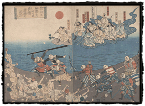

|
Religion and Health
by Laura W. Allen
Many of the prints in the collection reflect the belief in deities as causative agents of disease: both smallpox and measles "gods" are shown again and again as forces to be appeased, if not forcibly repelled. A second, related category of prints reflects the inverse of this idea, by showing Shinto or Buddhist deities who lead or sanction the fight against disease. An 1858 print by Yoshikazu, titled "Various protective gods help good drugs cure vicious diseases," depicts a battle between a group of armed soldiers and their weak-looking opponents, semi-naked men in simple white robes piled helter-skelter on the shoreline as they are attacked with bows, arrows, and staves. The soldiers' heads are spheres, labeled with the names of various medicines (semen, or santonin, is one, hiyosu, or henbane is another), while the enemy, given grimacing human heads, are labeled food poisoning, stomach-ache, dropsy, and so on. Seemingly directing the battle from above is a figure labeled gyūtō tennō, or Emperor Cowpox [Vaccine]. He directs the soldiers with a tree branch, as he leads a procession of seven Shinto deities from the heavens. In other words, it is through their intercession that the medicines are effective. Other prints from the collection similarly include Shinto deities overseeing the suppression of disease.
|
|||